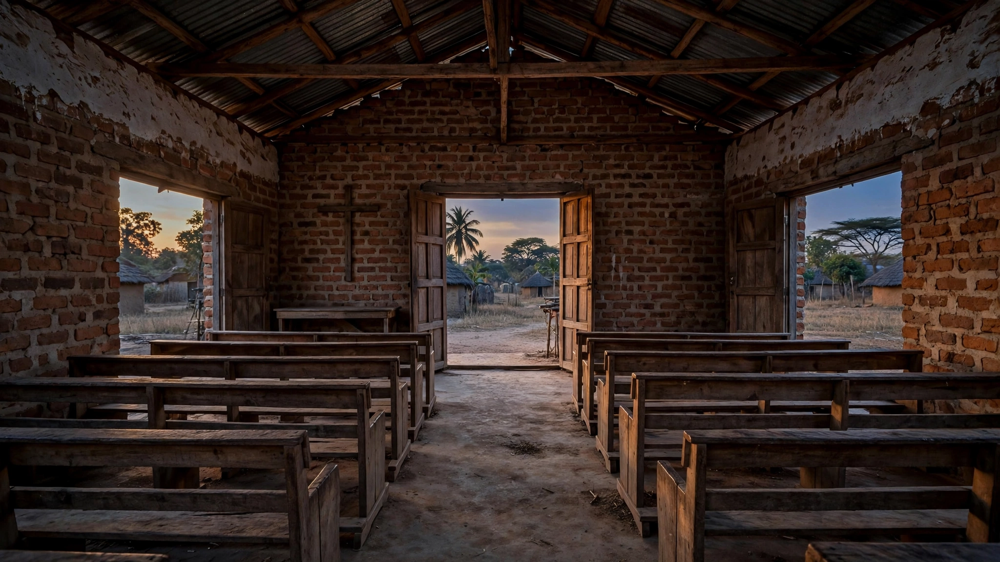

Persecuted ChurchIglesia Perseguida
More than 170 worshippers kidnapped from three churches in KadunaMás de 170 fieles secuestrados de tres iglesias en Kaduna
Gunmen raided three churches in Kurmin Wali village during Sunday services and abducted more than 170 worshippers, in one of the largest mass kidnappings of Christians in Nigeria's recent history.Hombres armados asaltaron tres iglesias en la aldea de Kurmin Wali durante los cultos dominicales y secuestraron a más de 170 fieles, en uno de los secuestros masivos de cristianos más grandes de la historia reciente de Nigeria.